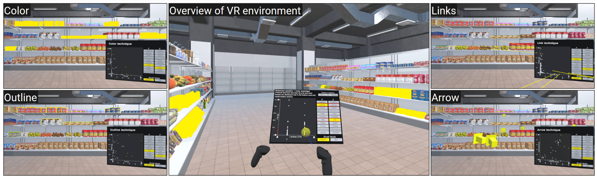

Visual Highlighting for Situated Brushing and Linking

Authors. Nina Doerr, Benjamin Lee, Katarina Baricova, Dieter Schmalstieg, Michael Sedlmair
Venue. EuroVis (2024) Full Paper
Type. Full Paper
Abstract. Brushing and linking is widely used for visual analytics in desktop environments. However, using this approach to link many data items between situated (e.g., a virtual screen with data) and embedded views (e.g., highlighted objects in the physical environment) is largely unexplored. To this end, we study the effectiveness of visual highlighting techniques in helping users identify and link physical referents to brushed data marks in a situated scatterplot. In an exploratory virtual reality user study (N=20), we evaluated four highlighting techniques under different physical layouts and tasks. We discuss the effectiveness of these techniques, as well as implications for the design of brushing and linking operations in situated analytics.
Pending publication